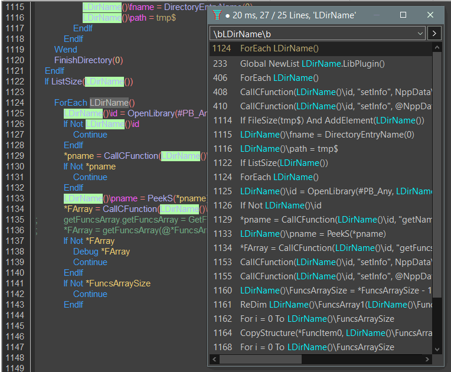

FindAllReferences
Назначение
Поиск всех вхождений выделенного слова в окне редактора.

FindAllReferences - инструмент для IDE PureBasic. Предназначен для поиска какого либо элемента кода (процедуры, ключевого слова, константы и т.д.). Выводит список строк в которых найден элемент кода. Клик по элементу списка сопровождается прыжком к указанной строке. Позволяет быстро анализировать код и перемещаться по нему. В верхней части окна имеется раскрывающийся список для выбора готовых регулярных выражений из двух десятков, а также позволяет ввести собственное регулярное выражение.
В заголовке списка имеется особая строка (сверху) содержащая номер строки откуда был вызван инструмент. Это позволяет вернуться в начальную позицию, то есть перемещаться между основным редактируемым участком кода и другими просматриваемыми участками кода.
Если язык программирования отличается от встроенного (PureBasic) то в ini-файле можно задать свои регулярные выражения.
По поводу авторства, я лишь один из 6-ти участников вкладывающих усилие в проект. Несмотря на это проект имеет 3 ветви, ещё Scintilla от Mesa и многопотоковый от Dadlick. Особенности форка от Dadlick - повторный вызов с открытием в том же окне, но недостаток - дополнительная колонка с именем функции где найдено ключевое слово, это может быть медленным для крупных исходников кода 6700 строк - 7 сек, против пол-секунды. Особенности Scintilla от Mesa - подсветка кода, но этот исходник по итогу требует dll от Scintilla и функционал требует доводки - нет первой строки от места вызова, повторный вызов начинает мерцать курсор, нет опционального показа номеров строк, выделение искомого не такое яркое.
Использование в SciTE
Чтобы использовать инструмент в SciTE откройте файл AutoIt\SciTE\Properties\au3.properties и найдите там перечисление инструментов. На их основе создаём свой. Важно указать правильно номер инструмента, который в ниже в конфиге указан как 35. Для вашего случая это может быть другой номер.
# 35 FindAllReferencesSciTE
command.35.$(au3)="$(SciteDefaultHome)\FindAllReferences.exe" SciTE SciTEWindow "$(CurrentWord)"
command.name.35.$(au3)=FindAllReferences
command.shortcut.35.$(au3)=Ctrl+Shift+X
command.subsystem.35.$(au3)=2
command.save.before.35.$(au3)=2
command.replace.selection.35.$(au3)=0
command.quiet.35.$(au3)=1
$(SciteDefaultHome) это папка где находится SciTE.exe, здесь можно указать прямой путь.
Параметры SciTE SciTEWindow "$(CurrentWord)" соответственно "текст в заголовке окна", "класс окна", "текущее слово".
FindAllReferences - имя пункта отображаемое в меню Tools редактора SciTE
Ctrl+Shift+X - горячая клавиша
Файл FindAllReferencesSciTE.ini, в нём регулярные выражения для AutoIt3-кода, которые будут использоваться взамен встроенных регулярных выражений по умолчанию для PureBasic. Имя конфига должно быть FindAllReferences.ini и находиться он должен рядом с программой.
Использование в Notepad++
Чтобы использовать инструмент в Notepad++ откройте файл %APPDATA%\Notepad++\shortcuts.xml и добавьте ниже приведённую строку.
<Command name="FindAllReferences" Ctrl="yes" Alt="no" Shift="yes" Key="68">"$(NPP_DIRECTORY)\Tools\FindAllReferences.exe" Notepad++ Notepad++ "$(CURRENT_WORD)"</Command>
$(NPP_DIRECTORY) это папка где находится notepad++.exe, здесь можно указать прямой путь.
Параметры Notepad++ Notepad++ "$(CURRENT_WORD)" соответственно "текст в заголовке окна", "класс окна", "текущее слово".
FindAllReferences - имя пункта отображаемое в меню "Запуск" редактора Notepad++
Ctrl="yes" Alt="no" Shift="yes" Key="68" - это горячая клавиша Ctrl+Shift+D
Файл FindAllReferencesNPP.ini, в нём универсальные регулярные выражения для разных языков, которые будут использоваться взамен встроенных регулярных выражений по умолчанию для PureBasic. Имя конфига должно быть FindAllReferences.ini и находиться он должен рядом с программой.